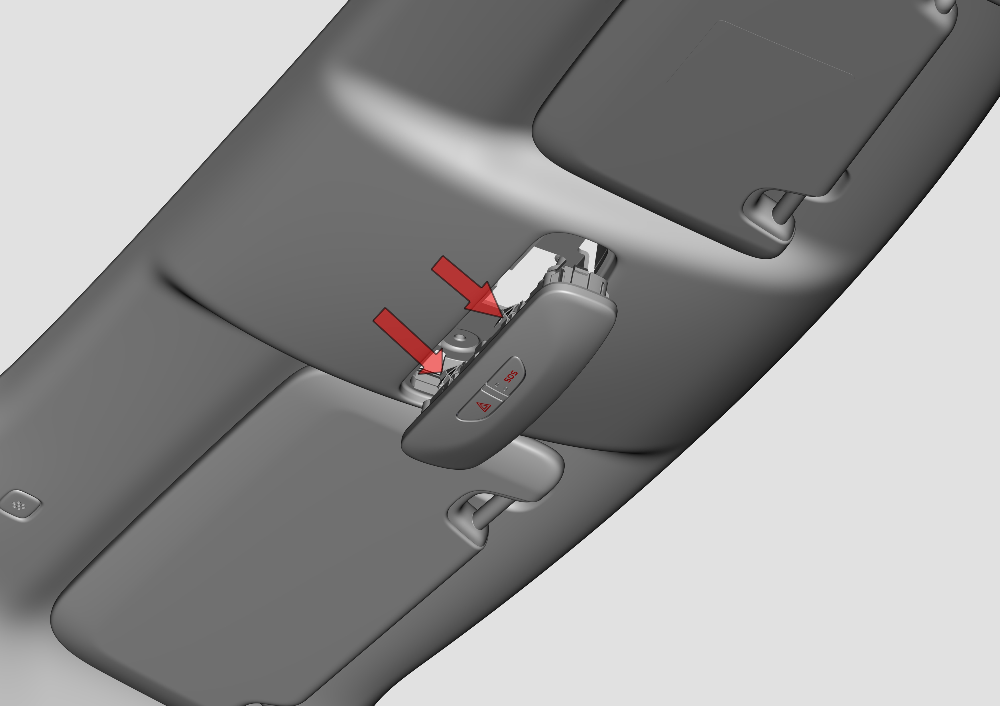

Снятие

С помощью плоской отвертки поддеть два пружинных фиксатора в передней или задней части, пружинные фиксаторы выскочат из кронштейна обивки потолка, снять передний плафон освещения салона.
После снятия переднего плафона освещения салона отсоединить электрический разъем жгута проводов.
Установка
Установка выполняется в порядке, обратном снятию.